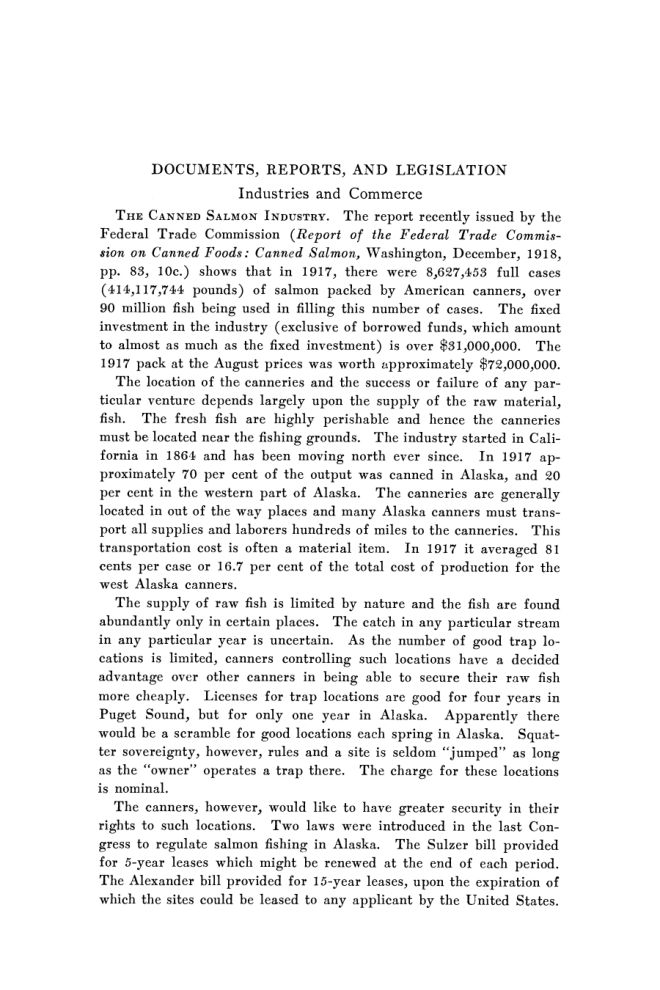

A lei da receita de 1918, o dólar estável e a terra do Lácio
Leitura: 18 min
Os Blakey dissecam a lei da receita de 1918; Knibbs e Fisher debatem o dólar de poder de compra estável; Tinnes, Frank e Dewing tratam do ajuste diário da moeda, do Lácio arcaico e das ferrovias falidas.


Em 24 de fevereiro de 1919, mais de três meses depois do armistício, o presidente dos Estados Unidos assinou a lei da receita que, por determinação do próprio texto, se chamaria Revenue Act of 1918. Em junho de 1918, o secretário do Tesouro pedira que ela arrecadasse oito bilhões de dólares, um terço da despesa prevista para um ano de guerra. A lei aprovada previa cerca de seis bilhões. Roy G. e Gladys C. Blakey abrem a edição de junho de 1919 com a anatomia dessa lei, título por título.
A edição tem seis artigos e uma comunicação. Depois dos Blakey, o estatístico australiano G. H. Knibbs examina a proposta de Irving Fisher de estabilizar o poder de compra do dólar, e Fisher responde nas páginas seguintes; D. J. Tinnes apresenta sua variante do mesmo plano, com ajuste diário; Tenney Frank reconstrói a agricultura do Lácio antes de Roma dominar a Itália; e Arthur S. Dewing conclui uma série sobre a reorganização de ferrovias falidas. Tinnes volta no fim com uma lista de definições experimentais. Seguem-se resenhas, documentos, resumos de periódicos, a décima sexta lista de teses de doutorado em andamento e notas. O fio comum é a medida: quanto o Estado pode tirar da renda, com que régua se mede o valor do dinheiro, quanto a terra rendia e quanto uma ferrovia pode dever.
Como os Estados Unidos pagariam a conta da guerra depois do armistício?
Roy G. Blakey e Gladys C. Blakey (University of Minnesota) · “The Revenue Act of 1918” · pp. 214–243
Os Blakey contam primeiro a tramitação. A Câmara aprovou o projeto em 20 de setembro de 1918, contando com oito bilhões. Enquanto o Senado o examinava, dois fatos mudaram as contas: a lei que proibia bebidas alcoólicas a partir de julho de 1919 cortou em 500 milhões de dólares a receita estimada sobre bebidas, e o armistício reduziu a despesa prevista do governo de cerca de 24 bilhões para 18 bilhões. O Senado fez cerca de seiscentas mudanças no texto da Câmara, e a maior disputa na comissão de conciliação foi sobre as alíquotas do imposto sobre lucros extraordinários.
Na pessoa física, o imposto normal ficou em 6% sobre os primeiros 4.000 dólares tributáveis e 12% sobre o restante, caindo para 4% e 8% a partir de 1919. A sobretaxa, adicional progressivo sobre rendas acima de 5.000 dólares, chegava a 65% acima de um milhão. A isenção pessoal continuou em 1.000 dólares para solteiros e 2.000 para casados, e o abatimento de 200 dólares passou a valer para cada dependente, e não só para filhos. As empresas pagavam 12% em 1918 e 10% em 1919, além do imposto sobre lucros extraordinários e de guerra, com faixas de 30%, 65% e 80%.
As novidades mais visíveis eram o imposto sobre o emprego de trabalho infantil, de 10% do lucro líquido, usado para substituir a lei que a Suprema Corte derrubara, e o imposto sobre artigos de luxo pago pelo comprador. Os autores defendem a alíquota alta sobre lucros de guerra e lembram que, com créditos e isenções, ela alcança bem menos de 80% desses lucros.
Para os autores, nada parece tão antiético quanto ver “alguns indivíduos fazerem fortuna com uma calamidade mundial”. (“a few individuals make a fortune out of a world calamity”)
O balanço é de aprovação com reservas. A lei melhora as anteriores, mas deixa demais para o empréstimo. Os Blakey concordam com o presidente da comissão de Meios e Recursos da Câmara, Kitchin, em que foi um erro tributar menos de oito bilhões, porque os pagamentos da guerra atingiram o pico depois do armistício.
Basta corrigir os contratos pelo índice de preços?
G. H. Knibbs (Melbourne, Austrália) · “Consideration of the Proposal to Stabilize the Unit of Money” · pp. 244–255
Knibbs começa resumindo a proposta de Fisher em nove pontos. O preço exprime relações de troca entre mercadorias; nenhuma mercadoria isolada, nem o ouro, mantém posição fixa em relação à média das demais; logo, o dólar deveria representar uma cesta de mercadorias, e não uma moeda de ouro de peso fixo. O dólar viraria um certificado de papel conversível numa quantidade de ouro anunciada periodicamente pelo governo, corrigida pelo índice de preços para que o poder de compra médio se mantivesse.
A primeira objeção é que o plano desmonetiza o ouro e, ainda assim, lhe deixa uma posição única, pois só o ouro tem preço oficial. A segunda é que ele não faz nada que um ajuste de contratos pelo índice não fizesse. Um salário de 100 xelins acertado com o índice em 1.200 passaria a 125 xelins com o índice em 1.500; um depósito bancário seria devolvido pela mesma regra. É a ideia de Jevons, lembra Knibbs, aplicada na Austrália aos salários mínimos, mas não de forma automática.
A terceira objeção é moral. Se o banco deve devolver mais ouro quando os preços sobem, por que o dono de um silo não devolveria mais trigo quando o trigo barateia? Quem detém uma mercadoria que perde valor sofre a perda, mas não é roubado, escreve Knibbs, contra a linguagem de Fisher.
Por fim, Knibbs teme o papel sem lastro, lembra os assignats franceses e propõe um caso extremo: num continente isolado, uma seca derruba as colheitas, e o dólar estabilizado perde valor em mercadorias. Numa fome, diz, as pessoas dariam dois ou três desses dólares pela cesta que cada um representava. Nenhum ajuste por índice protege contra a escassez real.
Para Knibbs, a tentativa de criar uma unidade de valor constante é “realmente quimérica”. (“The attempt to create a unit of value which shall be constant is really chimerical”)
Por que embutir o índice na própria moeda?
Irving Fisher (Yale University) · “Consideration of the Proposal to Stabilize the Unit of Money: Rejoinder by Professor Fisher” · pp. 256–262
Fisher responde com os fatos da guerra. Greves foram encerradas com aumentos proporcionais ao custo de vida; Oregon e Washington revisaram o salário mínimo pelo mesmo critério; o War Labor Board e o Shipping Board usaram números-índice para fixar escalas salariais; empresas criaram envelopes de custo de vida; o Bankers Trust Company, de Nova York, mandou calcular o custo de vida de seus funcionários num relatório de vinte e duas páginas. Se o ouro bastasse, pergunta Fisher, por que tanta gente se daria a esse trabalho?
O argumento central é prático. Corrigir cada contrato pelo índice é possível em teoria, como seria possível medir pano com uma régua elástica e um multiplicador diário fornecido pelo serviço de meteorologia. Na prática, ninguém faria o cálculo, e quem estabilizasse um lado do balanço e não o outro desestabilizaria o lucro. O horário de verão, compara Fisher, funcionou porque se mudou o relógio do país inteiro, e não porque cada um passou a acordar uma hora mais cedo. O plano embute o índice na unidade monetária e dispensa a conta individual.
Quanto à justiça, Fisher concede que ninguém prejudicado pela variação do dinheiro tem queixa contra outra pessoa: o problema é social, não individual. O comerciante de carne arca com o risco da carne porque é profissional; com o ouro como padrão de todos os contratos, cada usuário de dinheiro vira especulador em ouro. À hipótese da fome mundial, Fisher opõe outra, mais provável: uma grande descoberta de ouro.
Antes da guerra, diz Fisher, o ouro era “mais ou menos tão estável quanto os ovos, e menos que os tapetes”. (“gold was only about as stable as eggs and not as stable as carpets”)
E se o dólar fosse ajustado todos os dias?
D. J. Tinnes (Hunter, North Dakota) · “The Market Gage Dollar” · pp. 263–266
Tinnes, de Hunter, Dakota do Norte, citado por Fisher entre os que chegaram de forma independente a um plano semelhante, apresenta o seu com o título de “An American Standard of Value”. As premissas são as de Fisher: o poder de compra de toda moeda e de todo crédito usado como meio de troca varia com o peso em ouro do dólar em que são resgatáveis, e o nível de preços varia na razão inversa. Aumentar o ouro do dólar baixa os preços; reduzi-lo os eleva.
A divergência está no índice e na frequência. Tinnes não aceita que se use uma lista seleta de mercadorias sensíveis, sem as de preço lento ou fixado, como sugeria Fisher: um índice assim se deixaria arrastar pelas mercadorias que barateiam de forma permanente e perderia a ligação com o nível de todas as mercadorias. O dólar, escreve, deve medir todas as coisas, e todas devem entrar no seu quadro. A primeira versão do plano previa correção semanal; Tinnes passou ao ajuste diário, porque com intervalos longos o dólar ficaria fora do centro a maior parte do tempo e a correção, quando viesse, daria solavancos.
O mecanismo é aritmético. A cada dia se calcula o índice do mercado, o Market Gage, e a taxa de resgate em ouro do dia multiplicada pelo índice dá a taxa do dia seguinte. Quando a tendência persiste por dois dias, acrescenta-se uma compensação pelo atraso de ajuste do mercado; no exemplo, 10% do desvio do dia. O quadro todo seria revisto uma vez por ano.
Os salários ficam fora do índice. Um mercado estável os estabilizaria, mas atrelá-los ao nível de preços impediria o trabalhador de participar dos ganhos de produtividade; para eles, Tinnes propõe uma média salarial à parte. Ele também descarta um padrão internacional: nenhum peso de ouro mede o mesmo valor em mercados distantes, e um padrão americano bastaria para começar.
Por que a planície de Roma, hoje deserta, alimentou um povo conquistador?
Tenney Frank (Bryn Mawr College) · “Agriculture in Early Latium” · pp. 267–276
Frank parte de um contraste. A Campagna romana, a planície mais desolada da Itália em seu tempo, sustentou as massas que submeteram a Itália. Para explicá-lo, ele reúne geologia, arqueologia e ciência do solo. A planície é recente: as últimas camadas de cinza vulcânica talvez sejam posteriores às pirâmides do Egito, e mais de cinquenta crateras podem ser achadas a menos de vinte e cinco milhas da cidade. A cinza é rica em fosfatos e potássio, mas precisava de florestas para formar húmus, e Teofrasto ainda descrevia o Lácio como fonte de madeira para quilhas de navios.
O clima também era outro. Varrão punha a colheita em julho, e os autores clássicos falam de chuvas de verão; em 1919, o trigo era colhido às pressas em meados de junho. Frank atribui a diferença ao desmatamento das montanhas, e não a ciclos climáticos.
A prova da agricultura intensiva está nas obras. Abaixo de Velletri, o solo é cortado por túneis de drenagem, os cuniculi, que somam centenas de milhas e desviavam a água das ravinas para conter a erosão e poupar terra cultivável. Na ravina de Scarpellata, barragens de blocos de meia tonelada salvavam, cada uma, no máximo meio acre. Para Frank, só uma população densa, apertada em lotes de cerca de dois jugera por família, justificaria esse trabalho, e obras que atravessavam centenas de lotes sugerem grandes proprietários capazes de comandar o trabalho de muitos arrendatários.
A intensidade esgotou o solo. Terra fina, relevo irregular, desmatamento e erosão transformaram vales férteis em pântanos maláricos. Os proprietários passaram à pastagem, combinando campos de verão nas montanhas e de inverno na planície, com escravos como pastores; uma área de mil acres que sustentara cem famílias camponesas ficou a cargo de poucos escravos. Vinhas e oliveiras tomaram as encostas. Daí a tese final: a revolução agrícola do Lácio já ia longe antes da Primeira Guerra Púnica, e o trigo da Sicília veio suprir uma falta já sentida, e não arruinar uma lavoura ainda viva.
O que uma ferrovia falida precisa conseguir ao se reorganizar?
Arthur S. Dewing · “The Purposes Achieved by Railroad Reorganization” · pp. 277–310
É o terceiro artigo de Dewing sobre o tema na revista. Toda reorganização, diz ele, tem dois fins: obter dinheiro novo, para pagar as dívidas da administração judicial e reconstruir a linha, e reduzir os encargos fixos, juros de títulos e aluguéis, a um nível que a renda da nova empresa sustente. O primeiro fim é temporário; o segundo, permanente.
Dewing classifica as falências pela causa. As primárias são fracassos econômicos de grandes sistemas, cuja capacidade de lucro não justifica o capital, e pedem reorganizações profundas. As secundárias vêm de crises passageiras, como más safras, enchentes ou o vencimento de notas, e mexem só nas camadas de cima. As terciárias são de pequenas linhas locais, e o peso recai sobre os credores.
Nas primárias, a operação segue as camadas de títulos. Os antigos títulos de ramais e divisões são refinanciados numa emissão única, de juros menores, com termos que dependem da renda e da importância estratégica de cada trecho. Os títulos gerais de primeira hipoteca cedem pouco. A grande economia vem dos títulos subordinados, trocados por ações preferenciais ou títulos de renda, cujos juros só são pagos se houver lucro. Na reorganização da Pere Marquette, em 1916, onze emissões de ramais e divisões, de 26,3 milhões de dólares, tiveram os encargos reduzidos de 1.268.160 para 982.140 dólares, um corte de mais de 22%.
Dewing observa que a repartição dessas contribuições era decidida mais por conveniência que por justiça: os banqueiros estimavam quanto cada classe de acionistas aceitaria pagar para manter algum interesse na nova empresa, e o restante recaía sobre os credores subordinados. O dinheiro vinha das contribuições ou da venda de títulos a sindicatos de banqueiros, que garantiam o pagamento das contribuições e davam apoio moral ao plano. A remuneração desses sindicatos, conclui, não era exorbitante diante do risco.
Faltavam palavras exatas para falar de valor?
D. J. Tinnes · “Experimental Definitions” · p. 311
A última peça antes das resenhas é uma comunicação de uma página. A revista informa que recebeu de Tinnes, de Hunter, Dakota do Norte, mais uma contribuição para uma discussão sobre definições que vinha correndo em suas páginas no volume de 1918. O texto é uma lista de termos, cada um com uma definição curta e, às vezes, uma justificativa.
O primeiro termo é wantedness, a qualidade de ser desejado. Tinnes acha ambíguo o termo utilidade e inexatas as definições correntes, “capaz de satisfazer um desejo humano” ou “deve satisfazer algum desejo”: o fator de demanda no valor seria o fato de a coisa ser desejada, e não a capacidade de satisfazer nem a satisfação obtida. Nessa linguagem, a wantedness líquida é a utilidade marginal.
O segundo é valure, forma obsoleta que Tinnes quer reviver para designar o valor no sentido econômico, a eficiência ou valia na troca, aliviando uma palavra sobrecarregada; propõe até derivados. Preço seria o valure expresso em dinheiro. Valurat, ou simplesmente val, seria uma coisa móvel dotada de valure, definição que exclui a terra, o trabalho e os serviços pessoais e profissionais.
A parte monetária é a que liga a nota ao plano do Market Gage publicado na mesma edição. Dinheiro, ou caixa, seria a moeda emitida ou autorizada pelo governo, o que inclui as notas dos bancos nacionais. Currency, o meio circulante, seria o dinheiro mais a moeda de depósito: parece absurdo a Tinnes não contar como meio circulante os cheques e saques bancários, nos quais, diz, se faz nove décimos dos negócios do país. Os créditos comerciais seriam todos os créditos usados como meio de troca, inclusive lançamentos contábeis e acordos tácitos de pagar em dinheiro ou em bens com preço em dinheiro.
A nota termina com uma escolha de método. Tanto faz, diz Tinnes, considerar esses créditos como aumento da quantidade de moeda ou como aumento de sua circulação; ele prefere tratá-los como quantidade adicionada, porque nem eles são giro do papel em que são contados, nem as operações com papel são giro do ouro que o papel representa.
O que mais há na edição?
As resenhas incluem Instincts in Industry, de Ordway Tead, e Creative Impulse in Industry, de Helen Marot, por John R. Commons; L’Économie politique et les économistes, de Gustave Schelle, e Readings in Industrial Society, de Leon Carroll Marshall, ambos por Lewis H. Haney; The Food Crisis and Americanism, de William Stull, por E. G. Nourse; Principles of Business, de Charles W. Gerstenberg, por Harvey A. Wooster; a History of Labor in the United States de John R. Commons e colaboradores, por George E. Barnett; o relatório do National Industrial Conference Board sobre horas de trabalho e produção na indústria de lã, por Robert E. Chaddock; The Human Machine and Industrial Efficiency, de Frederic S. Lee, por George M. Janes; Income Tax Procedure, 1919, de Robert H. Montgomery, por Carl C. Plehn; o estudo de Edmond Earle Lincoln sobre a eletricidade municipal em Massachusetts, por Clyde L. King; o levantamento de Edgar Sydenstricker e colaboradores sobre doença e renda familiar em vilas de fiação da Carolina do Sul, por Willford I. King; Introduction to Mathematical Statistics, de Carl J. West, por James McMahon; e The Mathematical Theory of Population, do próprio Knibbs, por Horace Secrist. Nos documentos, Paul D. Converse trata da indústria de salmão enlatado, Julius H. Parmelee das propostas para o problema ferroviário e do relatório do diretor-geral das ferrovias, e Irving Fisher da equação de trocas de 1918. As notas registram novos sócios e os temas do prêmio Hart Schaffner & Marx, entre eles a base econômica de uma Liga das Nações e o futuro da oferta de alimentos.
Na minha leitura
Na minha leitura, a edição de junho de 1919 é um exercício sobre réguas. Os Blakey medem a lei pelo que ela arrecada e pelo que deixa ao empréstimo, e o exemplo numérico da empresa fictícia mostra melhor que qualquer definição como as faixas de lucro extraordinário funcionavam. Knibbs e Fisher discutem se a correção monetária deve ficar em cada contrato ou na própria unidade, e Tinnes leva o argumento ao limite do ajuste diário. A disputa não é sobre o objetivo, que os dois lados aceitam, mas sobre quem faz a conta e quem arca com o risco.
Frank e Dewing usam outras réguas para a mesma pergunta: quanto um ativo pode render. Frank lê túneis e barragens como evidência de que a terra valia o trabalho de salvá-la; Dewing mostra que reorganizar uma ferrovia é ajustar os direitos dos credores à renda que a linha de fato produz. Nos dois casos, o que decide é a capacidade de geração de renda, e não o valor nominal das obrigações.
Glossário
- Imposto sobre lucros extraordinários
- imposto sobre o lucro que excede um retorno considerado normal sobre o capital investido, usado para alcançar ganhos de guerra.
- Sobretaxa (surtax)
- adicional progressivo cobrado, além do imposto normal, sobre a parte da renda acima de certo limite.
- Número-índice
- média ponderada dos preços de um conjunto de bens em relação a um período-base, usada para medir o nível geral de preços.
- Dólar estabilizado (ou compensado)
- proposta de Irving Fisher de variar periodicamente o peso em ouro do dólar para manter constante seu poder de compra.
- Senhoriagem
- cobrança pela conversão ou cunhagem de moeda; no plano de Fisher, uma pequena taxa sobre a troca de certificados por ouro.
- Encargos fixos
- juros de títulos e aluguéis que a empresa deve pagar qualquer que seja o lucro.
- Título de renda (income bond)
- título cujos juros só são devidos se houver lucro suficiente.
- Avaliação (assessment)
- contribuição em dinheiro exigida dos antigos acionistas para participarem da empresa reorganizada.
- Sindicato de subscrição
- grupo de banqueiros que garante a entrada do dinheiro novo numa reorganização, mediante comissão.
Artigos (7)
- The Revenue Act of 1918 — Roy G. Blakey e Gladys C. Blakey (University of Minnesota) (pp. 214–243) · resenha acima · comentário completo · JSTOR
- Consideration of the Proposal to Stabilize the Unit of Money — G. H. Knibbs (Melbourne, Austrália) (pp. 244–255) · resenha acima · comentário completo · JSTOR
- Consideration of the Proposal to Stabilize the Unit of Money: Rejoinder by Professor Fisher — Irving Fisher (Yale University) (pp. 256–262) · resenha acima · JSTOR
- The Market Gage Dollar — D. J. Tinnes (Hunter, North Dakota) (pp. 263–266) · resenha acima · JSTOR
- Agriculture in Early Latium — Tenney Frank (Bryn Mawr College) (pp. 267–276) · resenha acima · JSTOR
- The Purposes Achieved by Railroad Reorganization — Arthur S. Dewing (pp. 277–310) · resenha acima · JSTOR
- Experimental Definitions — D. J. Tinnes (pp. 311) · resenha acima · JSTOR
Resenhas (13)
- Ordway Tead, Instincts in Industry; Helen Marot, Creative Impulse in Industry — John R. Commons (University of Wisconsin) (pp. 312–316). Dois livros sobre a psicologia do trabalho industrial e o impulso criativo na indústria. JSTOR
- Gustave Schelle, L’Économie politique et les économistes — Lewis H. Haney (pp. 316–318). Panorama francês da economia política e de seus autores. JSTOR
- Leon Carroll Marshall, Readings in Industrial Society — Lewis H. Haney (pp. 319–321). Coletânea de leituras sobre a estrutura e o funcionamento da organização econômica moderna. JSTOR
- William Stull, The Food Crisis and Americanism — E. G. Nourse (Iowa State College) (pp. 325–327). Livro sobre a crise de alimentos e o americanismo. JSTOR
- Charles W. Gerstenberg, Principles of Business — Harvey A. Wooster (University of Missouri) (pp. 333–336). Manual de princípios de administração de negócios. JSTOR
- John R. Commons e colaboradores, History of Labor in the United States — George E. Barnett (The Johns Hopkins University) (pp. 340–342). História do trabalho nos Estados Unidos, por Commons e seus colaboradores. JSTOR
- Hours of Work as Related to Output and Health of Workers: Wool Manufacturing — Robert E. Chaddock (Columbia University) (pp. 342–348). Relatório do National Industrial Conference Board sobre jornada, produção e saúde na indústria de lã. JSTOR
- Frederic S. Lee, The Human Machine and Industrial Efficiency — George M. Janes (University of North Dakota) (pp. 348–349). Ensaio sobre a máquina humana e a eficiência industrial. JSTOR
- Robert H. Montgomery, Income Tax Procedure, 1919 — Carl C. Plehn (University of California) (pp. 354–357). Manual prático de apuração do imposto de renda. JSTOR
- Edmond Earle Lincoln, The Results of Municipal Electric Lighting in Massachusetts — Clyde L. King (pp. 370–372). Comparação entre usinas elétricas públicas e privadas em Massachusetts. JSTOR
- Edgar Sydenstricker, G. A. Wheeler e Joseph Goldberger, Disabling Sickness among the Population of Seven Cotton Mill Villages of South Carolina in Relation to Family Income — Willford I. King (pp. 375–377). Estudo do Serviço de Saúde Pública sobre doença incapacitante e renda familiar. JSTOR
- Carl J. West, Introduction to Mathematical Statistics — James McMahon (pp. 377–379). Manual introdutório de estatística matemática. JSTOR
- G. H. Knibbs, The Mathematical Theory of Population — Horace Secrist (Northwestern University) (pp. 379–383). Apêndice do censo australiano sobre a teoria matemática da população. JSTOR
Novos livros (17)
- New Books (pp. 318–319). Lista de livros novos: obras gerais, teoria e sua história. JSTOR
- New Books (pp. 321–325). Lista de livros novos: história econômica e geografia. JSTOR
- New Books (pp. 327–329). Lista de livros novos: agricultura, mineração, florestas e pesca. JSTOR
- New Books (pp. 329–330). Lista de livros novos: indústrias manufatureiras. JSTOR
- New Books (pp. 330). Lista de livros novos: transportes e comunicações. JSTOR
- New Books (pp. 331–333). Lista de livros novos: comércio e crises comerciais. JSTOR
- New Books (pp. 336–339). Lista de livros novos: contabilidade, métodos de negócios, investimentos e bolsas. JSTOR
- New Books (pp. 339–340). Lista de livros novos: capital e organização capitalista. JSTOR
- New Books (pp. 349–352). Lista de livros novos: trabalho e organizações trabalhistas. JSTOR
- New Books (pp. 352–354). Lista de livros novos: moeda, preços, crédito e bancos. JSTOR
- New Books (pp. 357–362). Lista de livros novos: finanças públicas, tributação e tarifa. JSTOR
- New Books (pp. 362–363). Lista de livros novos: população e migração. JSTOR
- New Books (pp. 363–367). Lista de livros novos: problemas sociais e reformas. JSTOR
- New Books — A. P. Winston (pp. 367–368). Lista de livros novos: seguros e pensões. JSTOR
- New Books (pp. 368–370). Lista de livros novos: pauperismo, caridade e assistência. JSTOR
- New Books (pp. 372–375). Lista de livros novos: socialismo e empresas cooperativas. JSTOR
- New Books (pp. 383). Lista de livros novos: estatística e seus métodos. JSTOR
Documentos, periódicos e notas (4)
- Documents, Reports, and Legislation (pp. 384–411). Salmão enlatado, propostas para o problema ferroviário, métodos de medir a rotatividade do trabalho e a equação de trocas de 1918. JSTOR
- Periodicals (pp. 412–432). Resumos de artigos de periódicos, por área. JSTOR
- Sixteenth List of Doctoral Dissertations in Political Economy in Progress in American Universities and Colleges (pp. 433–444). Décima sexta lista de teses de doutorado em economia em andamento nas universidades americanas. JSTOR
- Notes (pp. 445–454). Novos sócios, reuniões de associações acadêmicas e temas do prêmio Hart Schaffner & Marx. JSTOR
Fontes
- The Revenue Act of 1918 (pp. 214–243). JSTOR · Internet Archive (PDF)
- Consideration of the Proposal to Stabilize the Unit of Money (pp. 244–255). JSTOR · Internet Archive (PDF)
- Consideration of the Proposal to Stabilize the Unit of Money: Rejoinder by Professor Fisher (pp. 256–262). JSTOR · Internet Archive (PDF)
- The Market Gage Dollar (pp. 263–266). JSTOR · Internet Archive (PDF)
- Agriculture in Early Latium (pp. 267–276). JSTOR · Internet Archive (PDF)
- The Purposes Achieved by Railroad Reorganization (pp. 277–310). JSTOR · Internet Archive (PDF)
- Experimental Definitions (pp. 311). JSTOR · Internet Archive (PDF)
- [untitled] The American Economic Review, (1919-06-01), pages 312-316 (pp. 312–316). JSTOR · Internet Archive (PDF)
- [untitled] The American Economic Review, (1919-06-01), pages 316-318 (pp. 316–318). JSTOR · Internet Archive (PDF)
- New Books (pp. 318–319). JSTOR · Internet Archive (PDF)
- [untitled] The American Economic Review, (1919-06-01), pages 319-321 (pp. 319–321). JSTOR · Internet Archive (PDF)
- New Books (pp. 321–325). JSTOR · Internet Archive (PDF)
- [untitled] The American Economic Review, (1919-06-01), pages 325-327 (pp. 325–327). JSTOR · Internet Archive (PDF)
- New Books (pp. 327–329). JSTOR · Internet Archive (PDF)
- New Books (pp. 329–330). JSTOR · Internet Archive (PDF)
- New Books (pp. 330). JSTOR · Internet Archive (PDF)
- New Books (pp. 331–333). JSTOR · Internet Archive (PDF)
- [untitled] The American Economic Review, (1919-06-01), pages 333-336 (pp. 333–336). JSTOR · Internet Archive (PDF)
- New Books (pp. 336–339). JSTOR · Internet Archive (PDF)
- New Books (pp. 339–340). JSTOR · Internet Archive (PDF)
- [untitled] The American Economic Review, (1919-06-01), pages 340-342 (pp. 340–342). JSTOR · Internet Archive (PDF)
- [untitled] The American Economic Review, (1919-06-01), pages 342-348 (pp. 342–348). JSTOR · Internet Archive (PDF)
- [untitled] The American Economic Review, (1919-06-01), pages 348-349 (pp. 348–349). JSTOR · Internet Archive (PDF)
- New Books (pp. 349–352). JSTOR · Internet Archive (PDF)
- New Books (pp. 352–354). JSTOR · Internet Archive (PDF)
- [untitled] The American Economic Review, (1919-06-01), pages 354-357 (pp. 354–357). JSTOR · Internet Archive (PDF)
- New Books (pp. 357–362). JSTOR · Internet Archive (PDF)
- New Books (pp. 362–363). JSTOR · Internet Archive (PDF)
- New Books (pp. 363–367). JSTOR · Internet Archive (PDF)
- New Books (pp. 367–368). JSTOR · Internet Archive (PDF)
- New Books (pp. 368–370). JSTOR · Internet Archive (PDF)
- [untitled] The American Economic Review, (1919-06-01), pages 370-372 (pp. 370–372). JSTOR · Internet Archive (PDF)
- New Books (pp. 372–375). JSTOR · Internet Archive (PDF)
- [untitled] The American Economic Review, (1919-06-01), pages 375-377 (pp. 375–377). JSTOR · Internet Archive (PDF)
- [untitled] The American Economic Review, (1919-06-01), pages 377-379 (pp. 377–379). JSTOR · Internet Archive (PDF)
- [untitled] The American Economic Review, (1919-06-01), pages 379-383 (pp. 379–383). JSTOR · Internet Archive (PDF)
- New Books (pp. 383). JSTOR · Internet Archive (PDF)
- Documents, Reports, and Legislation (pp. 384–411). JSTOR · Internet Archive (PDF)
- Periodicals (pp. 412–432). JSTOR · Internet Archive (PDF)
- Sixteenth List of Doctoral Dissertations in Political Economy in Progress in American Universities and Colleges (pp. 433–444). JSTOR · Internet Archive (PDF)
- Notes (pp. 445–454). JSTOR · Internet Archive (PDF)
- Sumário da edição no JSTOR: The American Economic Review, vol. 9, nº 2.
Documento em domínio público (EUA, publicado antes de 1931), via JSTOR Early Journal Content e Internet Archive. Resumo e comentário do autor deste site, sem afiliação com a American Economic Association. Encontrou um erro? Escreva: a correção é publicada no próprio texto, com data.
← Nº 157 · Finanças de guerra, 1918: impostos, empréstimos e inflação Nº 159 · Tarifa por peça, monopólio e a pergunta: dividendo em ações é renda? →